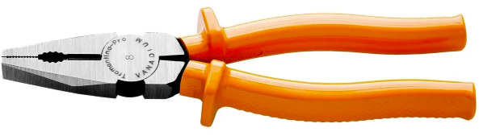
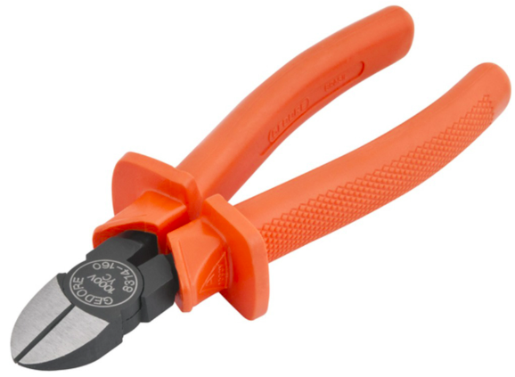
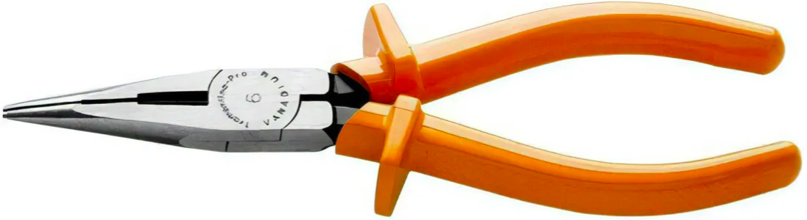
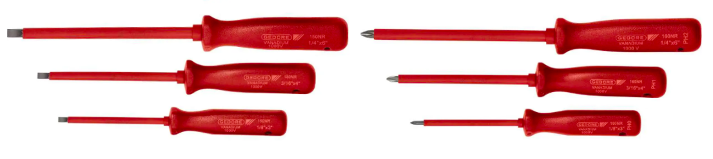
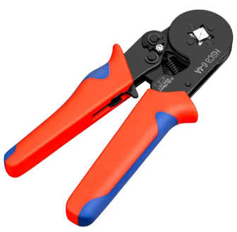
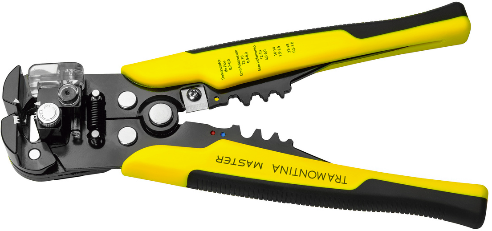

Guia em Instalações Elétricas Residenciais
Aula 21: Ferramentas, Instrumentos de Medição e Equipamentos de Segurança
Trabalhar com eletricidade exige precisão e responsabilidade. Utilizar ferramentas inadequadas ou sem isolamento pode danificar componentes e colocar sua vida em risco de choque elétrico ou arco elétrico. Toda ferramenta manual de contato direto deve possuir isolamento para 1000 V (Norma NR-10 e IEC 60900).
A ferramenta mais versátil. Serve para segurar, dobrar, torcer e cortar condutores rígidos e flexíveis.

Específico para decapagem e corte de condutores. Sua ponta permite cortes rentes nas caixas de passagem.

Essencial para alcançar locais de difícil acesso no interior de quadros e caixas de tomada.

Fenda e Philips com haste revestida de isolamento até a ponta para evitar curtos-circuitos acidentais.

Indispensável para crimpar terminais ilhós (tubulares) em cabos flexíveis antes da conexão nos disjuntores.

Aumenta a produtividade na montagem do quadro e remove a isolação de PVC sem ferir os filamentos de cobre.

Inspeção Visual Obrigatória: Antes de iniciar qualquer serviço, verifique a integridade do isolamento das ferramentas. Se o cabo emborrachado apresentar trincas, cortes ou desgaste aparente, a ferramenta deve ser descartada imediatamente. O improviso com fita isolante comum não substitui o isolamento de fábrica testado para 1000 V.
Não basta apenas comprar um multímetro; é preciso verificar a sua Categoria de Sobretensão (CAT). A categoria indica a capacidade do instrumento de suportar transientes e picos de tensão indutivos vindos da rede sem explodir na mão do operador.
| Categoria | Nível de Energia e Transientes | Locais de Aplicação Típicos |
|---|---|---|
| CAT I | Baixa energia | Equipamentos eletrônicos protegidos, circuitos impressos de baixa tensão. |
| CAT II | Média/Baixa energia | Tomadas residenciais e cargas monofásicas conectadas por plugue (eletrodomésticos). |
| CAT III | Alta energia (Residencial / Predial) | Quadros de Distribuição (QDF), disjuntores, barramentos, alimentadores e motores. |
| CAT IV | Altíssima energia | Origem da instalação elétrica: Padrão de Entrada da concessionária, ramal de serviço e transformadores. |
Instrumento utilizado para verificar Tensão Alternada (VAC e Contínua (VDC), Resistência (Ω), Continuidade sonora (teste de cabos interrompidos) e Corrente em baixa escala.
Aplicação no QDF: Medição da tensão fornecida pela concessionária e verificação de circuitos abertos.
Pesquisar Multímetros CAT IIIMede a corrente elétrica (A) em tempo real por indução eletromagnética através da garra, sem a necessidade de seccionar ou abrir o circuito. Mede também Tensão Alternada (VAC, Contínua (VDC), Resistência (Ω) e Continuidade sonora (teste de cabos interrompidos).
Aplicação Prática: Verificação do balanceamento de fases, diagnóstico de sobrecargas em disjuntores e teste de consumo de aparelhos específicos (chuveiros, ar-condicionado).
Pesquisar AmperímetrosIdentifica a presença do campo elétrico do condutor Fase sem necessidade de contato metálico com a parte viva.
Regra de Ouro: Deve ser a primeira ferramenta utilizada após o desligamento do disjuntor para realizar o teste de ausência de tensão antes de tocar em qualquer cabo.
Ver ModelosA segurança no trabalho elétrico não depende apenas de ferramentas isoladas, mas da proteção direta do corpo do profissional contra choques elétricos, arcos voltaicos, queimaduras e impactos. A utilização dos EPIs adequados é obrigatória em qualquer intervenção, inclusive no teste de ausência de tensão.
Protegem os olhos contra projeção de partículas, poeira de alvenaria e, principalmente, contra a radiação UV e projeções de metal derretido em um eventual curto-circuito/arco elétrico.
Indispensáveis em intervenções energizadas ou testes. A luva de borracha garante o isolamento elétrico e a sobreluva de couro protege contra perfurações e rasgos mecânicos.
Ideal para a etapa de infraestrutura bruta: passagem de cabos, rasgo em paredes, fixação de eletrodutos e manuseio de caixas de passagem, evitando cortes e bolhas.
Botina com solado isolante de poliuretano (PU) sem partes metálicas expostas. Evita o fechamento de circuito para a terra em caso de toque acidental em condutor energizado.
Equipamento de Proteção Coletiva (EPC) para travamento do disjuntor geral durante a manutenção. Impede que outra pessoa religue o circuito acidentalmente enquanto você trabalha.
Estes equipamentos não são obrigatórios para o início da carreira, mas representam um salto de produtividade, sofisticação e precisão técnica. São excelentes investimentos conforme o volume de serviços do profissional aumenta.
Trazem alta produtividade, precisão de diagnóstico e valor agregado ao serviço.
Aplica tensões elevadas (250V, 500V, 1000V) para medir a resistência de isolação dos cabos. Indispensável para localizar fuga de corrente que faz o disjuntor DR (IDR) armar sem motivo aparente.
Injeta um sinal de rádio no circuito e permite rastrear a rota exata de tubulações escondidas dentro da alvenaria ou forro, sem precisar quebrar paredes no escuro.
Permite enxergar o aquecimento excessivo em conexões e disjuntores do quadro de distribuição em segundos, antes mesmo de ocorrer uma falha grave ou incêndio.
Acelera drasticamente o tempo de montagem de caixas de passagem, espelhos de tomada e fixação de quadros de distribuição em comparação ao uso de chaves manuais.
Permite calcular a metragem de cômodos inteiros e comprimentos de circuitos longos sozinho, sem precisar de auxílio de ajudante para segurar a ponta da trena.
Para manter um alto nível de produtividade e transmitir confiança ao cliente, a organização dos insumos é indispensável:
Avalie os cenários abaixo e determine qual é a conduta correta sobre ferramentas e instrumentos:
Você precisa medir a tensão na saída do barramento do Quadro de Distribuição Principal de uma residência. Qual instrumento você deve escolher quanto à Categoria CAT?
O cliente reclama que o disjuntor do circuito de tomadas da cozinha está armando esporadicamente. Como você deve medir a corrente que está passando pelo cabo do disjuntor sem ter que seccionar o circuito?